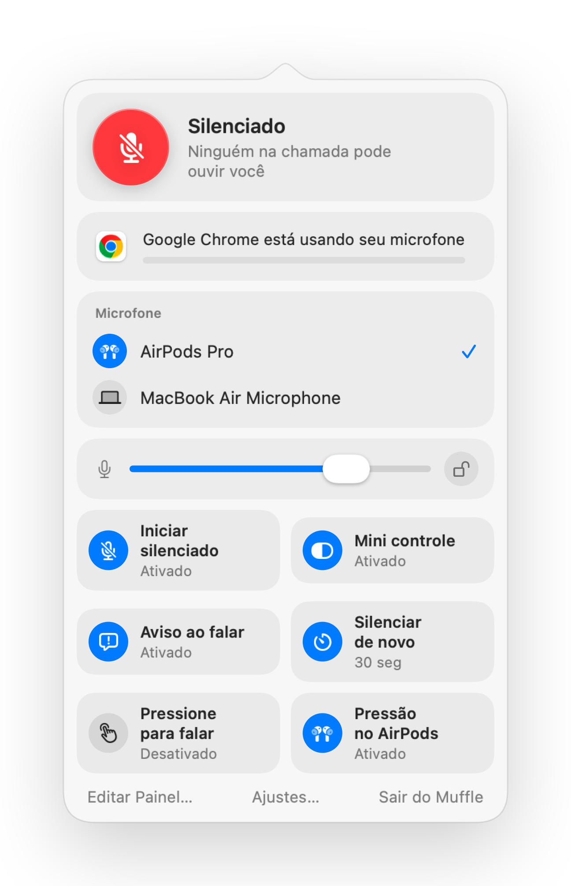

Como silenciar o Zoom com AirPods ou atalho no Mac
O atalho do próprio Zoom, Comando-Shift-A, só funciona quando o Zoom é o app em primeiro plano. Quando você está fazendo anotações ou compartilhando outra janela, procurar o botão de mudo custa alguns segundos constrangedores.
O Muffle oferece um único controle para silenciar o Zoom e qualquer outro app: seus AirPods, um atalho global ou a barra de menus. Ele silencia o próprio microfone, funcionando no app do Zoom e em chamadas pelo navegador.
Silencie o Zoom de qualquer lugar
- 1
Instale o Muffle e permita o acesso ao microfone.
- 2
Entre na reunião do Zoom normalmente.
- 3
Pressione a haste do AirPods ou use Control-Opção-M para silenciar, a partir de qualquer app.
- 4
Segure Control-Opção-M enquanto estiver silenciado para falar e solte para silenciar de novo.

- Se o Zoom capturar a pressão do AirPods no seu Mac, o atalho e a barra de menus ainda silenciarão você pelo Muffle.
- O Zoom pode mostrar que seu microfone está ativado enquanto o Muffle estiver com o microfone desligado. Os participantes ouvem silêncio.
Perguntas frequentes
O Muffle substitui o botão de silenciar do Zoom?
Ele funciona em conjunto com ele. O Muffle desativa o microfone para todos os apps, permitindo silenciar o Zoom sem precisar alternar para ele.
Posso usar a função para falar segurando a tecla no Zoom?
Sim. Enquanto estiver silenciado, segure o atalho do Muffle para falar. Isso funciona no Zoom e em qualquer outro app.